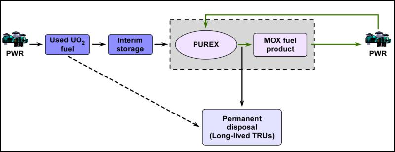
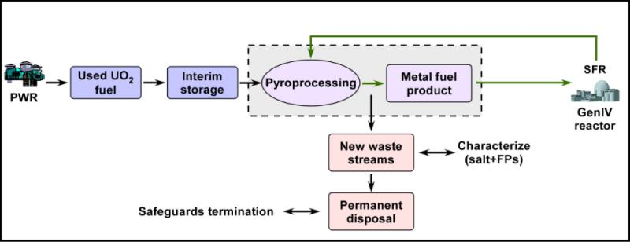
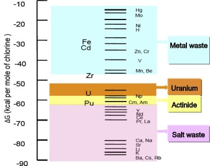
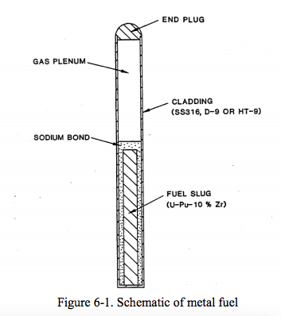
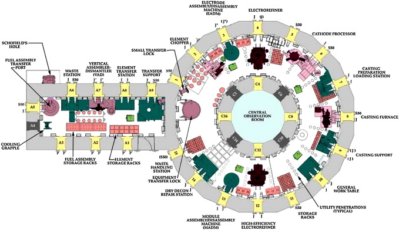
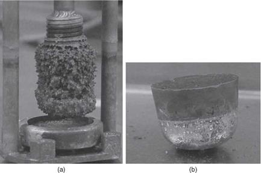
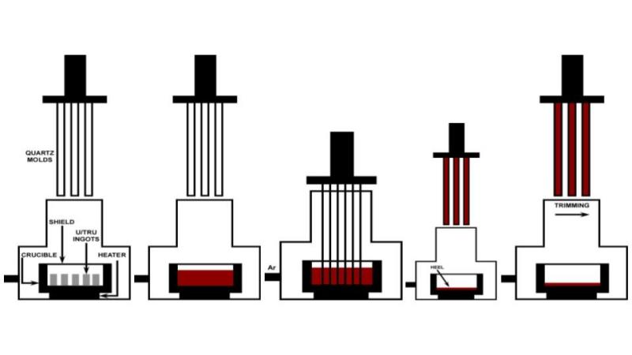

class: center, middle # NE585 ## NUCLEAR FUEL CYCLE ANALYSIS ### Pyroprocessing #### 7 --- # Outcomes for the lecture Understanding the role of pyroprocessing in the fuel cycle All me (And Jieun) Complement to covering PUREX in NE450 --- class: center, middle # What's the big deal about pyroprocessing? --- # Current nuclear energy systems use only U and U+Pu as nuclear fuel  Established for decades and used around the world Generates liquid waste Pu separated as pure stream Must dispose TRUs $^{237}Np = 2 \times 10^6 y$ --- # Transition to an advanced fuel cycle can assure resource sustainability  Pu not chemically separated from TRUs Generates solid waste Characterize new waste streams and waste forms; safeguards termination Generation IV reactors burn TRUs --- class: center, middle # You know what's coming ---  --- # My pyroprocessing flowsheet is based on the South Korean concept KAERI But they all do the same thing "Dry" batch processing of used fuel using electrochemistry And lots of salt Use of high temperature redox reactions in nonaqueous media Separation of actinides, U, Pu from fission products Takes advantage of volatility, thermodynamic stabilities of the compounds in the salts --- # ANL and INL are doing the pyroprocessing work in the USA Develop for a fast fuel cycle Typically for SFR Can co locate with a reactor Short cooled fuel can be processed Used for EBR-II for decades Tour on 17th October --- # Partitioned according to Gibbs free energy of formation of chloride  Uranium recovered by a solid cathode TRUs can be co-deposited at liquid cadmium cathode Noble metal retains with cladding materials in the anode basket Alkaline earth metals, alkaline metals, rare earths accumulated in the molten salt as chlorides Pu cannot be separated purely "Proliferation resistant" Really though? --- # EBR-II used a sodium bonded metallic fuel  This isn't the same one but it's close Plenum collected fission gases 53% - 78% enrichment with 1% Pu [National Research Council](https://inldigitallibrary.inl.gov/Reports/ANL-Ebr-500.pdf) concluded that ANL met criteria for successful demonstration --- # Pyroprocessing at INL took place at the Fuel Conditioning Facility  Electrorefining at INL scaled by three orders of magnitude since Mark I 99.7% recovery of actinides Still not enough for commerical scale --- class: middle, center # Some notes on Korea ## N.A.S. --- # About 97% of energy resources are imported Nuclear was about 1/3 share Coal and gas are the other large sources 37%, 20% 2006 government report planned to increase nuclear share to 40% 2030 Jieun removed then President Park from office New [President Moon](https://www.theguardian.com/world/2017/jun/19/new-south-korean-president-vows-to-end-use-of-nuclear-power) not favorable to nuclear Kori-1, oldest plant shutdown in the summer 2017 --- # Korea is running out of [storage space](https://www.scientificamerican.com/article/as-nuclear-waste-piles-up-south-korea-faces-storage-crisis/) for used fuel Some sites near capacities Others run out by 2021 They are reracking and using dry storage Take the article with a bit of salt though on the opinion But this is the motivation for pyroprocessing Originally wanted prototype plant at 100 t/y 2028 with SFR Current 123 Agreement does not allow for reprocessing --- # [Electroreduction](https://drive.google.com/file/d/0B1ENwqH9aCq5V1NxdnRDN2Z2YWs/view?usp=sharing) converts oxide fuel to metal  --- # Dissolution in $LiCl-Li_2O$ salt at $650^oC$ $U_3O_8$ powder placed in an MgO cathode basket Oxides reduced to metal in the basket Cs, Sr for chlorides in solution, other AEFP, AMFP - Ba Metal homogeneously reduced in basket Can do DA on that - verify --- # [Electrorefining](https://drive.google.com/file/d/0B1ENwqH9aCq5VDRyN2RpQUJfZ3c/view?usp=sharing) extracts U metal  --- # Dissolution in $LiCl-KCl$ salt at $500^oC$  Ingots from electroreduction placed in anode basket U collected as dendrites on solid cathode TRUs remain in salt NMFPs and REFPs remain in salt - Ru, Pd, etc. --- # Fuel is expected to be fabricated by injection casting at $1500^oC$  Fuel alloy is homogenized Long time-at-temperature Loss of volatile Am 4 - 7 mm diameter 200 mm length ---  --- # Pyroprocessing potentially offers benefits over once though cycle Burning Pu, TRUs Transmute I,Tc Disposal of high heat FPs Disposal of short lived FPs Reuse U 1/20 reduction in waste volume 1/100 reduction in heat load 1/1000 reduction in radiotoxicity D Hahn, S. W. Park, J. H. Chang PBNC Aomori 2008 ---